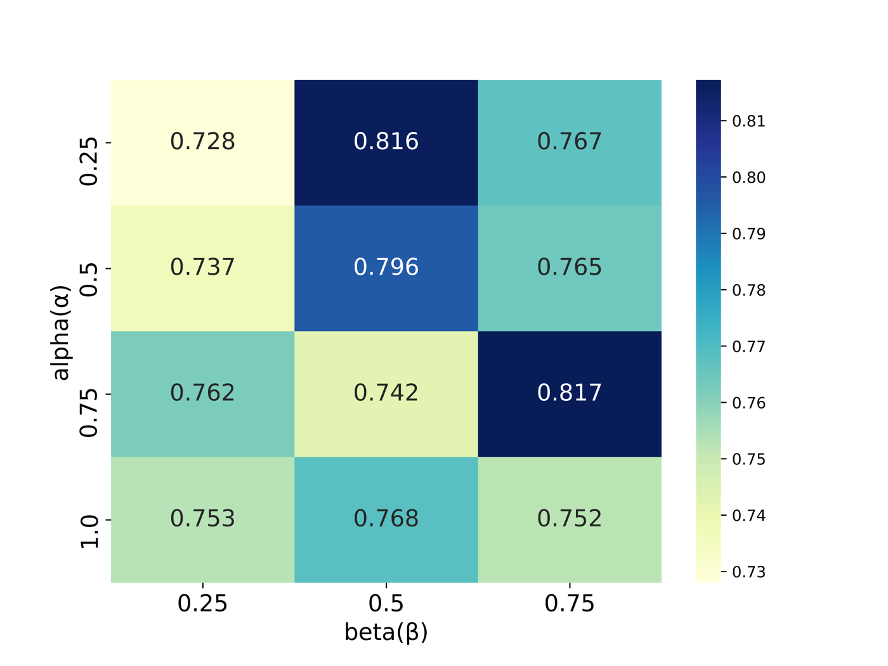

잔차 정보를 활용한 극단 수요 예측
AdaBoost.RDT: AdaBoost Integrated With Residual-Based Decision Tree for Demand Prediction of Bike Sharing Systems Under Extreme Demands
평균적인 수요와 급증하는 수요를 함께 예측하기 위해 AdaBoost에 잔차 기반 의사결정나무를 결합했습니다.
- 방법: 잔차 트리의 정보를 후속 부스팅에 반영
- 평가: 일반 수요와 극단 수요 구간을 함께 비교



연구 문제
공유자전거 수요는 낮거나 보통인 구간이 많고 높은 수요 구간은 적습니다. 전체 평균 오차가 작아도 급증 구간을 과소 예측할 수 있어, 일반 수요의 예측을 유지하면서 극단 수요를 다루는 것이 문제였습니다.
접근 방법
서울·대전의 시간별 이용 자료와 날씨·시간·지역 특성을 사용했습니다. 조정된 모델 트리와 잔차 기반 트리를 부스팅 과정에 결합하며, 이전 단계의 잔차 정보를 후속 학습의 추가 특징으로 전달합니다. 공개 구현은 잔차 정보를 이용해 예측 결합도 조정합니다.
AdaBoost와 다른 부스팅 모델을 비교하고 일반 수요·극단 수요 구간을 구분해 평가했습니다. 파라미터별 결과도 함께 분석해 특정 설정에 대한 민감도를 확인했습니다.
기여
제1저자로 극단 수요 예측 모델 연구에 참여했습니다. 공개 연구 기록은 일반 수요 성능을 함께 고려하면서 극단 수요의 과소 예측을 완화한 결과를 보고합니다. 그림의 파라미터 분석은 개별 실험 조건이며 전체 모델의 보편적인 성능을 의미하지 않습니다.